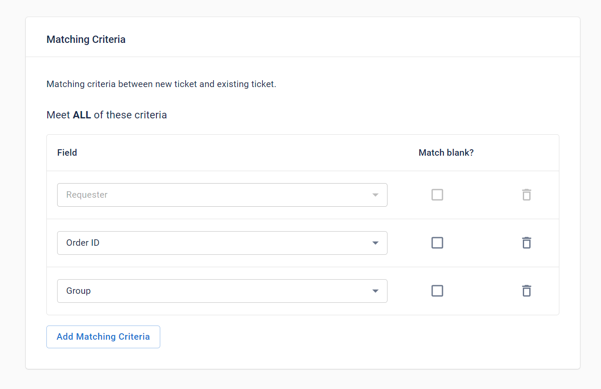

Automatically detect and merge duplicate Zendesk tickets
Automatically merge duplicate tickets using customizable rules, eliminating the need for manual intervention. Powered by Zendesk integration services, the entire merging process occurs within your instance, ensuring a smooth and efficient operation. Since no data is transferred to external services, all information remains secure and contained within your instance.
Merge Zendesk Tickets using your own Duplicate Criteria
You are in control of how and when a customer ticket is considered a duplicate by using additional ticket fields to be matched, such as:
Define Custom Trigger Conditions
Take full control of your automated processes by defining specific conditions that determine whether a procedure (merge rule) will proceed. Set custom rules to trigger actions only when the necessary criteria are met, such as:

Narrow Search Results with Custom Filter Conditions
Prevent certain tickets from merging based on your own exclusion requirements. By setting custom filter conditions, you can control which tickets are excluded from the merge process, such a: